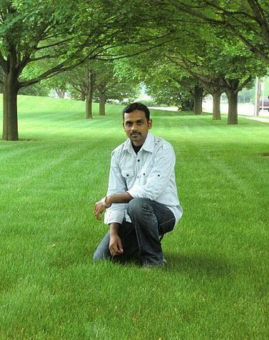

At some point of time, life usually ends, but the quest and curiosity about life and its goals never ends. I have been wading through this big ocean of lifes quest,
Over the past 6 years I have been working as part of Support Team in identifying and constantly improving the Support Processes in Applications, Web Portals, Hardware and Network front. In my endeavor to enhance the support processes, I have spearheaded teams of developers and support analysts. As I come from a hardware and networking background, dealing predominantly with network routers/switches, servers, data centers, etc, I also wanted to learn about how the different application and websites interact and work in helping us run our daily business. This drove me to learn coding and help enhance my skills recently.
No matter what work I am associated with, I would alway looks for opportunities to optimize the work and eliminate redundant tasks. In view of that;
1) I would want to develop codes/scripts, portals that would help the IT world in optimizing the work for q quick turnover.
2) To own an organization that does process automations for IT support companies.